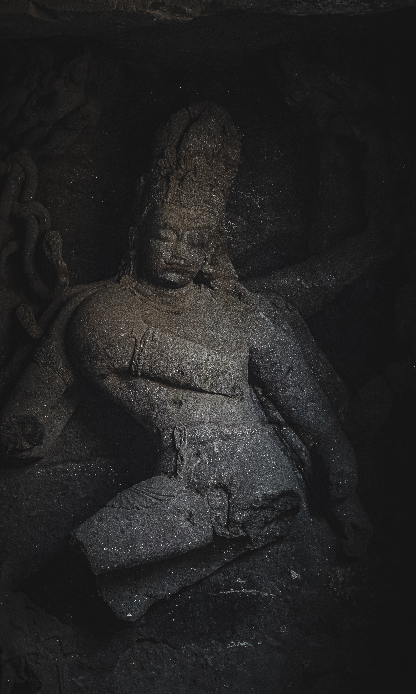
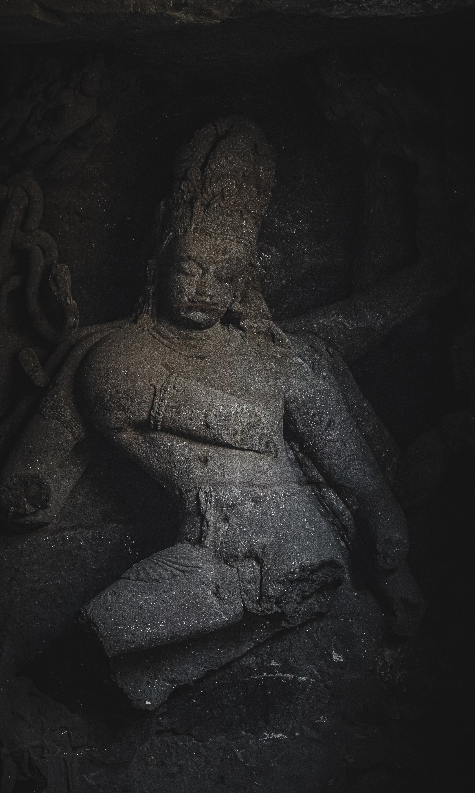

India
Mumbai

The Bandra-Worli Sea Link (officially known as Rajiv Gandhi Sea
Link[1]) is a 5.6 km long, 8-lane wide cable-stayed bridge that links
Bandra in the Western Suburbs of Mumbai with Worli in South Mumbai. It
is the longest sea bridge, as well as the 4th longest bridge in India
after Bhupen Hazarika Setu, Dibang River Bridge and Mahatma Gandhi
Setu. It contains pre-stressed concrete-steel viaducts on either side.
It was planned as a part of the proposed Western Freeway that would
link the Western Suburbs to Nariman Point in Mumbai's main business
district, but is now planned to become part of the Coastal Road to
Kandivali.
 
